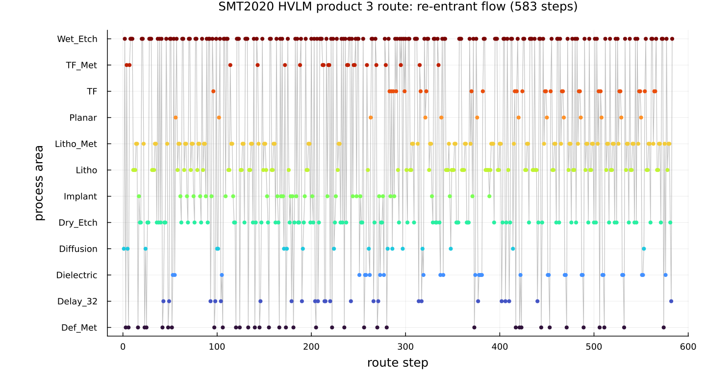
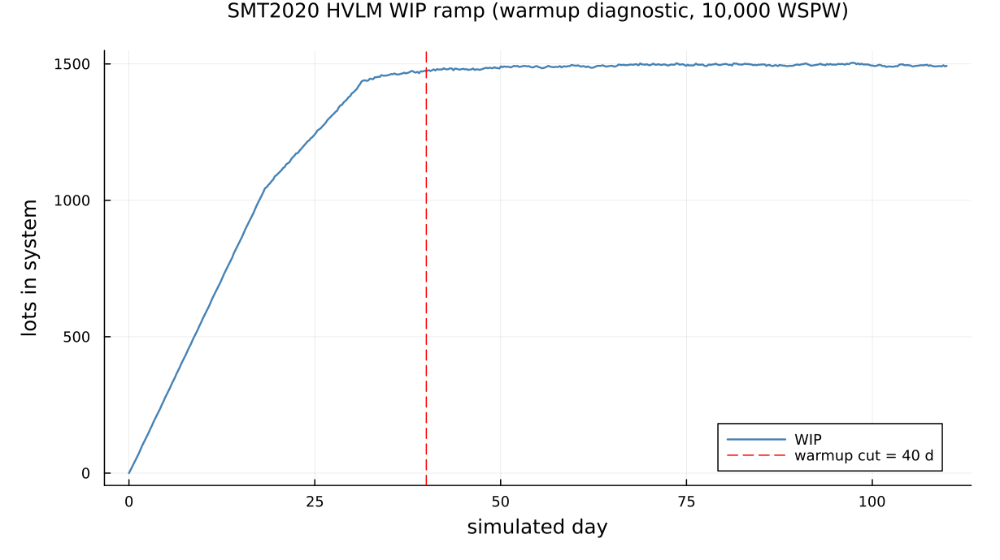
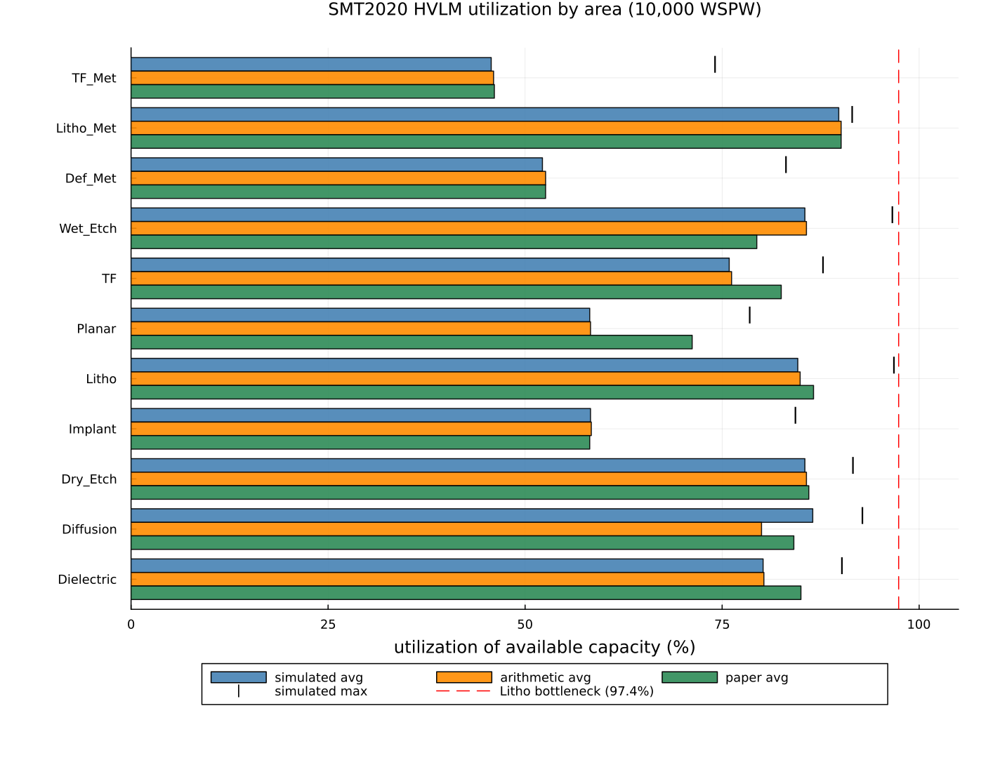
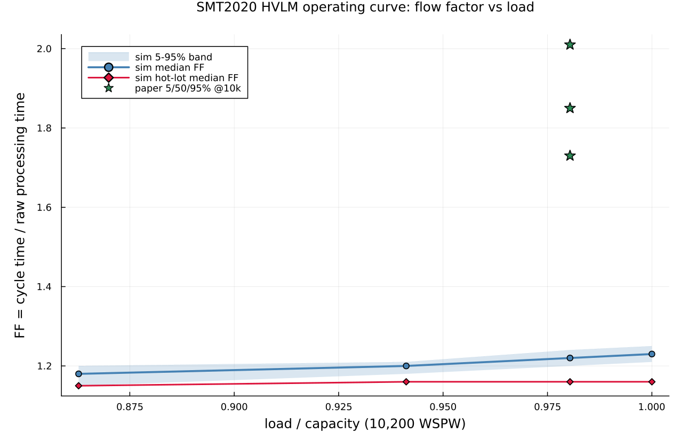

A reduced discrete-event model of the SMT2020 wafer fab
This page walks through examples/smt2020_hvlm.jl: a reduced discrete-event model of the SMT2020 dataset-1 (High-Volume/Low-Mix, "HVLM") semiconductor manufacturing testbed. It builds a 281-station, 926-route-step re-entrant fab from four minute-normalized CSVs, reproduces the paper's raw-processing-time (Table II) and utilization (Table III) numbers, and draws an operating curve. The reference is Kopp, Hassoun, Kalir & Mönch, "SMT2020 — A Semiconductor Manufacturing Testbed" (IEEE Trans. Semiconductor Manufacturing 33(4):522–531, 2020, DOI 10.1109/TSM.2020.3001933). The numerical data are the paper's reference set, downloaded from Lars Mönch's group at FernUniversität in Hagen; provenance is in examples/smt2020_hvlm_data/README.md.
Where the Yang LLM example is an M/G/1 queue you can check against a closed-form oracle, this one is at the opposite end of the scale: a full industrial fab model, hundreds of stations and nearly a thousand route steps, whose point is to show that Concourse's surface language can express such a system at all, and that the machinery it compiles to is quantitatively correct where an independent offered-load calculation says it should be.
Four terms, for a reader who has never seen a fab
A wafer fab turns blank silicon wafers into finished chips by depositing, patterning, and etching material one thin layer at a time. Wafers travel in lots (here, 25 wafers to a lot) and are processed by tool groups — pools of identical, expensive machines (a litho group might hold 28 steppers). A fab is a queueing network: lots are jobs, tool groups are multi-server stations, and a "route" is the ordered list of ~hundreds of process steps a lot must complete.
Re-entrant flow is the feature that makes a fab unlike an ordinary job shop. Each of the ~44 mask layers a chip needs is built by the same handful of areas — lithography, etch, deposition — so a lot returns to the litho group dozens of times over its route, each time competing with lots at completely different layers. A single tool group therefore sees the same lot again and again at different points in its life. The product-3 route below visits 105 distinct tool groups across 583 steps: the visit-count sawtooth is the whole character of the system.
Raw processing time (RPT) is how long a lot's route would take with the fab otherwise empty — pure processing plus handling plus transport, no waiting in any queue. It is the denominator of everything.
Flow factor (FF), also called cycle-time multiplier or x-factor, is the ratio of realized cycle time (release to completion, queueing included) to raw processing time: FF = CT / RPT. FF = 1 is a fab with no queues; a real loaded fab runs FF ≈ 1.5–2.5. The operating curve plots FF against fab load (wafer starts per week as a fraction of capacity): it is flat and low while the fab is underloaded, then rises sharply as load approaches capacity and queues explode. Reproducing that curve is the headline test — and, as we will see, the place where this reduction's dropped physics shows up most plainly.
What the fab is
The HVLM testbed runs two products through 105 real tool groups (1043 tools) plus one virtual hold station. Product 3 has a 583-step route, product 4 a 343-step route; both are heavily re-entrant. Regular lots of each product release every 51.69 min and hot lots every 2016 min, giving ~10,000 wafer starts per week (WSPW) against a stated capacity of ~10,200 WSPW. The re-entrant structure is best seen directly:

Each point is one route step, placed at its step index (x) and its process area (y). The vertical scatter is the re-entrancy: the route climbs and dives through the same dozen areas hundreds of times. Wet-etch and litho-metrology groups dominate — product 3's single most-visited group (WE_FE_108) is hit 52 times, Delay_32 24 times. There is no "assembly-line" ordering to exploit; every tool group is shared across the whole life of every lot.
Why this maps to Concourse
The mapping rests on one idea: a lot's global route position is a mark. Every lot carries an integer step; a shared transport hub increments it on every deposit and a single route table sends the lot to whatever station that step names. The lot's product and priority are two more marks. With those three marks and a table-driven service law, the entire 926-step re-entrant fab is expressed without any per-step station wiring: one hub, one route table, one service law, and ~124 tool stations that all look up their own occupancy from the mark.
This is the payoff of the surface language being data-driven. Nothing about the model is written per step; the routes are read from CSV and turned into lookup tables at compile time.
The reduction: what is kept, what is dropped
The example is deliberately a reduced model — it keeps the physics that sets capacity and drops the physics that only perturbs it, each drop with a quantified bound (from the data pre-validation in the project's analysis.md).
Kept (these define real capacity and cannot be dropped):
- Availability
Aper tool group, from PM + breakdown, precomputed intoolgroups.csvand validated against Table III availability to ≤0.2 points on all 11 areas. Enters the model as a capacity derate (below). - Cascading — the wafer- and lot-pipelining that determines how fast a tool really frees up.
- Batching — the diffusion furnaces (75–150 wafers = 3–6 lots per batch) are the dominant furnace time.
- Sampling probabilities — metrology steps are visited only with their sampling probability (mean ≈ 36%); dropping them would overstate metrology load by ~2.8×.
- The
Delay_32hold delays (up to ~3 days of the 27-day product-3 RPT) and transport (~10% of RPT).
Dropped (each with its bound):
| Dropped feature | Quantified bound / effect |
|---|---|
| Sequence-dependent setups | ≤1.1% of total processing minutes as an upper bound; the known cause of the Implant max-util residual |
| Rework loops | ≤1.8% probability, 2-step loops → <2% flow inflation (inside the RPT margin) |
| CQT (critical-queue-time) links | 41/25 forward links, invisible to offered load, second-order at these utilizations |
| Lot-to-lens (LTL) dedication | 11/7 litho steps; affects tool assignment within a group, not group-level load |
| SuperHotLot stream | ≈0.19% of product-3 releases; dropped, matches the oracle |
| **Downtime *dynamics*** | only the capacity mean of PM + breakdown is kept (via 1/A); the variability of downtime is dropped — this is the headline caveat |
That last row is the important one. The reduction keeps the average capacity lost to downtime but not its bursty timing, and, exactly as in the Yang example's monotone-delay curve, that missing variability is what makes the simulated operating curve sit below the paper's.
The architecture that makes a 926-step re-entrant fab expressible
Step-index-as-mark, incremented by a shared hub
Global step ids namespace the two routes: product 3 uses 1..583 (sink at 584), product 4 uses 1001..1343 (sink at 1344). A source stamps step = j0-1 (0 or 1000); one shared infinite-server transport hub increments step on every deposit via a remark, so a lot arrives at the hub, its step advances, and the route table sends it onward:
station!(net, :hub; servers = 1_000_000, discipline = FCFS(),
service = hub_service,
remark = (step = Law(:Dirac, value = Mark(:step) + Const(1.0)),))The hub's own service law is where transport time (and a latency deficit, below) is drawn. Because the hub is infinite-server, incrementing the step never itself becomes a bottleneck; it is pure bookkeeping riding on the transport delay every lot pays anyway.
One big ByMark route table
Every reachable global step — all 928 of them — is a breakpoint in a single ByMark route that both the real hub and the skip-hub share. It is an O(log n) binary search over the sorted step ids, dispatching each lot to its next tool group, sampling gate, batch substation, or sink:
vals = sort!(collect(keys(dest_kind)))
cutoffs = Float64[vals[i] + 0.5 for i in 1:length(vals) - 1]
dests = Symbol[]
for v in vals
k = dest_kind[v]
push!(dests, k == :batch ? batch_of[v].sym :
k == :gate ? Symbol("g", v) :
dest_sym[v])
end
route!(net, :hub, ByMark(Mark(:step), cutoffs, dests))
route!(net, :skiphub, ByMark(Mark(:step), cutoffs, dests))There is exactly one route table for the whole fab. Adding a step is adding a row to the CSV, not a station to the network.
Opaque table-lookup service laws
The tool groups are pure processors that share a single service law. It reads the lot's step mark, looks the (availability-inflated) occupancy up in a table, and draws Uniform(±5%) around it:
tool_service = Opaque((θ, marks, te) -> begin
o = max(get(OCC, Int(marks.step), 1e-6), 1e-9)
Uniform(0.95 * o, 1.05 * o)
end; marks = [:step])Every re-entrant visit to a group hits the same station and the same law; the mark alone selects the right per-step processing time. Opaque is what lets one law stand in for what would otherwise be hundreds of per-step service definitions.
Capacity-equivalent 1/A derating
Availability enters as a service inflation, not as explicit downtime events. With derate on, every tool's busy time is multiplied by 1/A, so the simulated busy fraction reads directly as the paper's "utilization of available capacity":
A = derate ? g.availability : 1.0
occ, lat = occ_lat(s, g)
occ_i = occ / AThis is the deliberate reduction: keep the mean capacity that downtime removes, drop its dynamics.
The lot-cascade occupancy/latency deficit trick
Cascading tools free up faster than a lot actually leaves them. For a lot-cascade step the tool is busy for only one cascade interval (throughput view), but the lot itself resides for the full processing time (latency view). The two differ by a latency deficit that must be added to cycle time without consuming tool capacity:
function occ_lat(s::RouteStep, tg::ToolGroup)
L, U = tg.load, tg.unload
...
else # :Lot
if isnan(s.cascade)
base = s.pt + L + U
return base, base
else
return s.cascade + L + U, s.pt + L + U # occ = throughput, lat = full PT
end
end
endThe deficit max(0, lat - occ/A) is paid later, at the infinite-server hub, where it is folded into the transport draw of the next step. Occupancy consumes the tool; the deficit only consumes cycle time. This keeps utilization and latency both correct without double-counting.
Sampling gates
A metrology step visited with probability p < 1 becomes an infinite-server gate that flips a Probabilistic coin — go to the tool with probability p, or skip to a zero-cost skip-hub (which still advances the step) with probability 1-p:
route!(net, sym, Probabilistic(gate_tool[gid] => p, :skiphub => 1 - p))The skip-hub costs no transport, so a skipped inspection neither loads the tool nor adds cycle time — exactly an expected-visit-rate p.
The per-(product, step) diffusion Batching split
The furnace batch criterion in the data is "Same Product and Same Step", but Concourse's Batching gathers FCFS regardless of marks. So each of the 10 diffusion groups is split into one Batching substation per (product, step), with the group's tools apportioned across substations by largest-remainder proportional to offered busy-minutes (group total preserved, every substation ≥2 tools):
station!(net, sym; servers = seats[k], discipline = FCFS(),
batching = Batching(min = bmin, max = bmax),
service = Law(:Uniform, lower = Const(0.95 * occ_i),
upper = Const(1.05 * occ_i)))This enforces homogeneous batches exactly, at the cost of lost furnace pooling flexibility — a capacity-conservative approximation (dedicated tools can only raise utilization, never hide it). A single pooled furnace with mixed batches would violate the criterion and be optimistic. As E2 shows, the split furnaces run slightly fuller than the mid-fill oracle, which is the expected direction.
The three-layer validation story
Because there is no closed-form oracle for a fab this size, validation is done in three layers, each checking a different thing.
Layer 1 — closed-form offered-load arithmetic vs the paper. Before any simulation, a pure expected-value calculation (no queueing) reproduces the paper's Tables II/III: availability matches to ≤0.2 points on all 11 areas, the litho bottleneck is reproduced exactly (LithoBE110 at 97.5% vs the paper's Litho max 97.4%), and RPT matches to <1% for both products. This validates that the reduced CSVs faithfully encode the fab.
Layer 2 — simulation vs that arithmetic. The discrete-event run is then checked against the same offered-load numbers. The simulation tracks the arithmetic oracle to ≤0.4 points on 10 of 11 areas — this is the layer that validates the Concourse machinery (derate, occupancy/deficit, sampling, batching, re-entrant routing), independent of whether the arithmetic itself matches the paper.
Layer 3 — simulation vs the paper. Where the arithmetic and the paper already disagree (the dropped physics), the simulation reproduces the arithmetic, not the paper. The operating curve is the sharpest case: the simulated flow factor is a flat ≈1.22 where the paper's is 1.85. That gap is the headline caveat, and it is the quantified signature of the dropped downtime dynamics.
E1: raw processing time in an empty fab
Setting the release load to 1 WSPW stretches the regular interval to 51.69 × 10000 min — far longer than any lot's cycle time — so the fab holds at most one lot per product and cycle time collapses to raw processing time. In rpt_mode every batch minimum is set to 1 lot (furnaces do not wait to fill, the paper's RPT convention). The gate is |sim − oracle| / oracle ≤ 2%:
== E1: raw processing time (empty fab, rpt_mode) ==
product 3: sim RPT = 27.43 d (n=61) arith(jl,no-rework) = 27.41 d oracle = 27.42 d paper = 27.18 d
product 4: sim RPT = 16.09 d (n=61) arith(jl,no-rework) = 16.09 d oracle = 16.10 d paper = 15.96 d
gate |sim-oracle|/oracle: p3 = 0.02% p4 = 0.09% (target <= 2%)Both products pass at two hundredths of a percent. This one test exercises the whole route mechanism end to end — occupancy, latency, the cascade deficit, transport, sampling, batching (at min = 1), and the cycle-time extraction from the replayed record — and confirms the reduced model reconstructs the paper's Table II to within its own 1% arithmetic margin.
E2: utilization at the 10,000 WSPW working point
The working-point run warms the fab for 40 sim-days and measures for 70, with the derate on so busy fraction reads as utilization-of-available-capacity. The warmup cut is justified by the WIP ramp:

WIP climbs from empty to ~1451 lots by day 33 and plateaus near ~1490 by day 44; the 40-day warmup cut (dashed line) sits safely on the plateau. Steady WIP is ~1500 lots — the number that governs runtime, since each event's cost grows with WIP.
The measurement is a single streaming fold over the record, integrating each tool group's busy-server count over the measurement window. The three-way table compares the simulation to the offered-load arithmetic oracle and to the paper:
== E2: utilization at 10000 WSPW ==
simulating 110 sim-days (warmup 40 + measure 70)...
5144183 firings in 688.4s (7473/s)
area sim_avg sim_max | oracle_avg oracle_max | paper_avg paper_max
Dielectric 80.2 90.2 | 80.3 90.3 | 85.0 89.8
Diffusion 86.5 92.8 | 80.0 89.3 | 84.1 90.0
Dry_Etch 85.5 91.6 | 85.7 91.7 | 86.0 91.8
Implant 58.3 84.3 | 58.4 84.3 | 58.2 89.9
Litho 84.6 96.8 | 84.9 97.5 | 86.6 97.4
Planar 58.2 78.5 | 58.3 78.5 | 71.2 87.2
TF 75.9 87.8 | 76.2 88.2 | 82.5 90.3
Wet_Etch 85.5 96.6 | 85.7 96.7 | 79.4 89.7
Def_Met 52.2 83.1 | 52.6 84.0 | 52.6 84.0
Litho_Met 89.8 91.5 | 90.1 91.7 | 90.1 91.7
TF_Met 45.7 74.1 | 46.0 74.8 | 46.1 74.9
The figure shows simulated / arithmetic / paper average utilization per area as grouped bars, with simulated maxima as tick marks and the 97.4% litho bottleneck as a reference line. Reading the layers:
- Simulation vs arithmetic (Layer 2): ≤0.4 points on 10 of 11 areas. The derate, occupancy, and re-entrant routing machinery reproduces the offered-load oracle almost exactly. The litho maximum lands at 96.8% (oracle 97.5%, paper 97.4%) — the bottleneck is reproduced. This is the result that validates Concourse.
- Diffusion sits above the oracle (86.5/92.8 sim vs 80.0/89.3 oracle, 84.1/90.0 paper): the split furnaces run fuller than the mid-fill assumption, the expected direction of the capacity-conservative batch split. The maximum, 92.8%, is ~2.8 points over the paper.
- Wet_Etch overshoots the paper in both sim and arithmetic (85.5/96.6 sim ≈ 85.7/96.7 oracle vs 79.4/89.7 paper). Offered-load arithmetic credits WetEtch with the full 10k WSPW, but in a real fab the upstream litho gate (~97%) throttles it. Here litho tops out at 96.8% rather than fully saturating, so it does not clamp WetEtch, and both sim and arithmetic overstate it by ~6–7 points. The missing throttle is again the paper's downtime dynamics.
- Planar / TF / Dielectric and the Implant maximum sit below the paper. Planar and TF inherit the lot-cascade lower-bound residual (the pure cascade-interval occupancy rule is a lower bound when a cascade's internal parallelism
Kis unknown, the single largest modeling ambiguity in the dataset). The Implant maximum (84.3 sim/oracle vs 89.9 paper) misses by exactly the dropped Implant gas setups (72–80 min changeovers that live off-route). In every case the simulation faithfully reproduces the arithmetic, not the paper — which is the point of Layer 2.
E3: the operating curve, and the headline caveat
The operating curve sweeps four loads spanning below, at, and above capacity, each a ~5M-firing simulate plus an equal-cost measurement fold. Flow factor is CT / RPT_paper(product), pooled over regular lots released inside a window that leaves every lot a 50-day completion buffer (so long-CT lots near capacity are not preferentially right-censored out of the tail). Hot-lot median FF is overlaid, and a split-half dispersion of the median is reported as a stability diagnostic:
== E3: operating curve (FF percentiles vs load) ==
load 8800 WSPW (0.863 cap): n_reg=980 median FF=1.18 [5%=1.15 95%=1.20] hotFF=1.15 split-half=0.004 (4309541 firings, 463s)
load 9600 WSPW (0.941 cap): n_reg=1068 median FF=1.20 [5%=1.18 95%=1.21] hotFF=1.16 split-half=0.004 (4691633 firings, 575s)
load 10000 WSPW (0.980 cap): n_reg=1114 median FF=1.22 [5%=1.20 95%=1.24] hotFF=1.16 split-half=0.005 (4873972 firings, 608s)
load 10200 WSPW (1.000 cap): n_reg=1136 median FF=1.23 [5%=1.21 95%=1.25] hotFF=1.16 split-half=0.006 (4957959 firings, 619s)
The figure plots simulated median flow factor with a 5–95% band against load/capacity, the hot-lot median overlaid, and the paper's 5/50/95% flow-factor values at 10,000 WSPW marked for reference.
The headline caveat. The simulated operating curve is flat and low: median FF rises only from 1.18 to 1.23 across the whole 0.86→1.00 capacity sweep, and even at capacity there is no blow-up. The paper reports median FF ≈ 1.85 at 10,000 WSPW (5–95% band [1.73, 2.01]). At the working point the simulation gives median FF = 1.22 [1.20, 1.24] — a cycle time of ~33 days (RPT 27.4 + ~5.6 days queueing) against the paper's ~50 days (~23 days queueing). The gap is not noise: the split-half dispersion of the median is 0.004–0.006, rock stable.
The gap is the dropped downtime dynamics, made quantitative. With deterministic capacity (the 1/A derate), many-server groups (litho 28 tools, wet-etch 35), and tight Uniform(±5%) service, queueing variance is low and no downtime bursts pile lots up — so the fab queues far less than the real one. The paper's ~23 days of queueing comes largely from the burstiness of PM and breakdown, which this reduction averages away. This is the same story as the Yang example's monotone-delay curve sitting below its data: a reduction that keeps the mean and drops the variability lands below the reference, in a direction you can predict and explain. Hot-lot FF (~1.16) barely differs from the regular median — non-preemptive priority hardly matters when queues are this short.
What this demonstrates about Concourse
- A near-thousand-step re-entrant fab is data-driven, not hand-wired. One step-index mark, one hub that increments it, one
ByMarkroute table over 928 steps, and oneOpaquetable-lookup service law express the whole network; the routes come from CSV. There is no per-step station wiring anywhere. - The surface language composes the fab-specific physics from stock parts. The cascade occupancy/latency deficit rides the infinite-server hub's transport draw; sampling is a
Probabilisticgate to a zero-cost skip-hub; availability is a capacity derate folded into the service law; homogeneous furnace batches are per-(product, step)Batchingsubstations with largest-remainder tool apportionment. - Validation is layered and honest. Layer 1 (arithmetic vs paper) checks the data; Layer 2 (sim vs arithmetic, ≤0.4 pt on 10/11 areas) checks the Concourse machinery; Layer 3 (sim vs paper) exposes exactly where the reduction's dropped physics lives. The simulation reproduces the arithmetic it is built from, and the residuals — Diffusion above, Wet_Etch overshooting, Planar/TF's cascade lower bound, Implant's dropped gas setups, the flat FF curve — each have a named cause.
- The measurement is a fold over the replayed record, not counters bolted into the simulator: utilization is the time-average busy-server count over a measurement window, cycle time is read from job birth/death in state membership, both reconstructed from the record after the fact.
Running it
julia --project=examples examples/smt2020_hvlm.jlRuntime is dominated by E2 and E3. Steady-state throughput is ~6.5–8k firings/s at full WIP (~1500 lots, which is what makes each event's cost grow); the E2 record is ~5M firings (~0.5 GB), and each of the four E3 load points is another ~5M-firing simulate plus an equal-cost measurement fold. Budget roughly 2 to 2.5 hours for the whole script on a laptop. E0 prints a live steady-state throughput estimate first so the rest is predictable. The horizons are long by necessity: the horizons were sized for the paper's cycle time at the working point (~1.85 × RPT ≈ 50 days), so that the E3 measure window and its 50-day completion buffer cannot right-censor long-cycle-time lots out of the FF tail even if the model queued as much as the real fab does.
The docs build does not run the simulation — the committed PNGs in docs/src/manual/figures/ are the artifacts this page embeds.